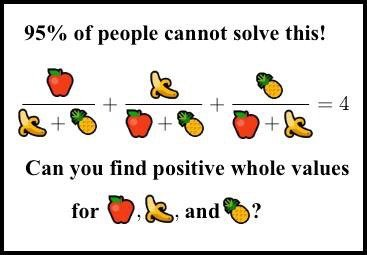
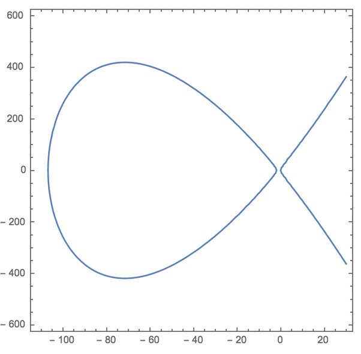
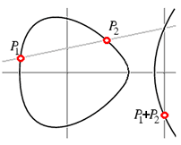
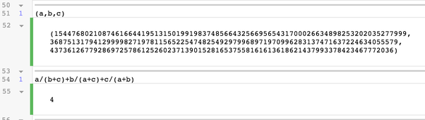
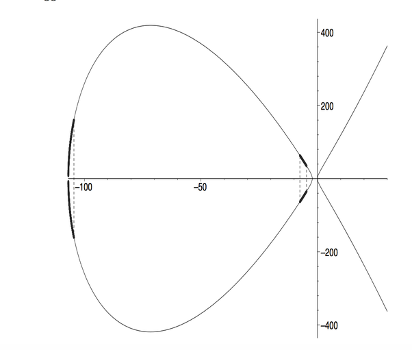

How do you find the positive integer solutions to
I was playing around with several cubic representation problems in the style of previous work by Andrew and Richard Guy. The numerical results were fascinating…” (comment on MathOverflow)
This is how Allan MacLeod, a retired mathematician, stumbled upon this equation just a few years ago, and it’s a really fascinating one. Honestly, it’s one of the finest diophantine equations I’ve seen, and I’ve seen a few.
I came across it when it was making the rounds on the web as a nerd-sniping, faux-meme image designed by some cruel soul (Sridhar, was that you?). I had no idea what I was looking at. It looked like this:

You may have seen such meme images before. They are always pure click-bait garbage: “95% of MIT graduates couldn’t solve this!”, where “this” is some inane, or ill-defined, or trivial brain teaser.
This one is not. The meme is a clever, or wicked, joke. Roughly 99.999995% of the people don’t stand a chance at solving it, and that includes a good number of mathematicians at leading universities who just don’t happen to be number theorists. It is solvable, yes, but it's really, genuinely hard.
(By the way, it wasn't actually Sridhar, or not exactly. See this comment for the history).
You may think that, if all else fails, we can just throw computers at the problem. It’s really easy to write a computer program that searches for solutions of this simple-looking equation. Surely a computer will find them eventually, if they do exist. Wrong. A brute-force search with a computer is totally useless here, unless you have a few novemdecillion years to spare.
I don’t know how to fit the entire solution in a Quora answer without assuming that everyone already knows everything they need to know about elliptic curves. All I can do here is a brief survey. The main reference is a wonderful, and fairly recent, paper by Bremner and MacLeod called “An unusual cubic representation problem”, published in 2014 in the Annales Mathematicae et Informaticae.
Let’s begin.
We are looking for solutions in positive integers of the equation
\displaystyle \frac{a}{b+c}+\frac{b}{a+c}+\frac{c}{a+b}=4 \tag 1
(I switched the variable names to match those in the paper).
The first thing to do when you’re looking at any equation is to try and place it in the right context. What sort of thing is this? Well, we are being asked to find solutions in integers, so this is a problem in number theory. As it stands, the equation involves rational functions (polynomials divided by other polynomials), but it’s clear that we can multiply by a common multiple of the denominators to clear things up and get just polynomials, so we have a Diophantine equation. The “positive” requirement is somewhat unusual, and as we shall see it makes things harder.
Now, how many variables do we have here? That seems like a silly question: clearly, we have three, namely a, b and c. Well, not so fast. A trained number theorist immediately notices that the equation is homogenous. What this means is that if (a,b,c) is any solution of that thing, then so is (7a,7b,7c). Do you see why? Multiplying each variable by some constant number (7 is just an example) doesn’t change anything, because the constant cancels out in each of the fractions.
\displaystyle \frac{ta}{tb+tc}=\frac{ta}{t(b+c)}=\frac{a}{b+c}.
This means that the equation only pretends to be three-dimensional. It is actually two-dimensional. Geometrically, we have a surface (a single equation in three variables generically defines a two-dimensional surface. Generally, k equations in n variables define a d-dimensional manifold, with d=n-k). But this surface is actually swept by a line passing through the origin and waving about; the resulting surface can be understood by focusing on how it cuts a single plane. This is a projective curve.
In the most elementary terms, this is what this reduction means: we can classify the solutions, whatever they are, to those where c=0 and those where c\neq 0. The first class involves just the two variables a and b, and for the second class we can just divide through by c and get a solution with c=1. So we can really just look for rational solutions in a and b for the case c=1, multiply them by a common denominator, and obtain an integer solution in a,b and c. Generally speaking, integer solutions of homogenous equations correspond to rational solutions of the dehomogenized version, which is one dimension lower.
Next up: what is the degree of our equation? The degree is the highest power of any term showing up, where “term” is the product of some variables, whose “power” is then the number of terms being multiplied. For example, if you have a^2bc^4, that’s a term of degree 7=2+1+4.
Diophantine equations behave very differently depending on their degree. In broad terms:
- Degree 1 is easy
- Degree 2 is fully understood, and can usually be handled by relatively elementary means
- Degree 3 is a vast ocean of deep theory and a million open problems
- Degree 4 and up… Really, really hard.
We are in degree 3. Why? Well, just multiply through by the denominators:
\displaystyle a(a+b)(a+c)+b(b+a)(b+c)+c(c+a)(c+b)=4(a+b)(a+c)(b+c)
Even without explicitly expanding everything out, you can see how the degree is 3: we’re never multiplying more than three occurrences of any variable. We’re going to have things like a^3 and b^2c and abc, but never anything that weighs more than 3 units. If you carry out the actual rearrangement, you will find that the equation is
\displaystyle a^3+b^3+c^3-3(a^2b+ab^2+a^2c+ac^2+b^2c+bc^2)-5abc=0.
You may object that multiplying through by the denominators is illegal if any of them happens to be 0. This is true, and indeed our new equation has a few solutions that don’t correspond to anything in the original equation. But that’s actually a good thing. The polynomial version adds a few “patches” to the original and makes it easier to work with; for any particular solution we find, we just need to check that it doesn’t make any of the original denominators vanish.
In fact, the polynomial equation is easily solved with, for instance, a=-1, b=1, c=0. That’s good: we have a rational solution, or a rational point. This means that our cubic equation (degree-3) is actually an elliptic curve.
When you find that your equation is an elliptic curve you A) rejoice and B) despair, because there’s so much to learn. This equation is a great example of how the powerful theory of elliptic curves can be applied to discover insanely hard to find solutions.
The first thing you do with an elliptic curve is bring it to Weierstrass form. This is an equation that looks like
y^2 = x^3 + ax + b
or sometimes
y^2 = x^3 + ax^2+bx+c (this is called the long Weierstrass form. It is not strictly needed, but sometimes it’s more convenient).
It’s a basic fact that any elliptic curve can be brought to this form (except if you’re working over fields of small characteristic, which you needn’t worry about here). It’ll take me a whole big answer to explain how to find the right transformation. Just know that it’s a completely mechanical process (it relies, crucially, on the fact that we have at least one rational point, which we do). There are several computer algebra packages which will do this for you, easily.
But even if you don’t know how to find the transformation, verifying it is easy – or, at least, purely mechanical. The required transformation in our case is given by the scary-looking formulas
\displaystyle x = \frac{-28(a+b+2c)}{6a+6b-c}
\displaystyle y = \frac{364(a-b)}{6a+6b-c}
I know this looks like random voodoo, but please believe me that it’s not. Once you have those transformations, a tedious but straightforward algebraic calculation confirms that
\displaystyle y^2 = x^3+109x^2+224x \tag 2
This equation, though it looks very different, is actually a faithful model of the original. Graphically, it looks like this – a typical elliptic curve with two real components:

The “fish tail” on the right keeps growing to infinity and beyond. The close oval shape on the left is, well, closed, and it will turn out that it’s where the fun is, for us.
Given any solution (x,y) of this equation, you can recover the needed a,b,c using
\displaystyle a = \frac{56-x+y}{56-14x}
\displaystyle b = \frac{56-x-y}{56-14x}
\displaystyle c = \frac{-28-6x}{28-7x}
(Remember that the triplet (a:b:c) is to be understood projectively – whatever values you get through those equations, you can always multiply them by whatever constant you wish).
The two maps we exhibited, from a,b,c to x,y and vice versa, show that these two equations are “the same” from the perspective of number theory: rational solutions of one give you rational solutions of the other. The technical term is birational equivalence, and it’s a very fundamental concept in algebraic geometry. As we noted, there could be some exceptional points that don’t genuinely map correctly; those are the cases where a+b, a+c or b+c turn out to be 0. This is standard fare in birational equivalences, and shouldn’t cause any concern.
Let’s look at an example.
The elliptic curve (2) has a nice rational point on it: x=-100, y=260. It’s not easy to find perhaps, but it’s super easy to verify: Just plug in those values and see that the two sides are the same (I didn’t choose this point at random, but never mind for now). We can simply check which a,b,c values it yields. We get
a = 2/7, b=-1/14, c=11/14
and since we can multiply by a common denominator, this can be modified into
a = 4, b=-1, c=11.
And indeed,
\displaystyle \frac{4}{-1+11}+\frac{-1}{4+11}+\frac{11}{4-1}=4
as you can readily verify. This is a simple solution to our original equation in integers, but alas – not positive integers. This solution is not easy to see by hand, but it’s also not hard to discover with some patience without all the machinery we are reviewing here. It’s the positive solutions that are the lair of dragons.
Now, as soon as you have a rational point on an elliptic curve, such as P=(-100,260) on our curve (2), you can start generating others using the chord and tangent technique, which we covered on a previous Quora episode.

To begin with, we can add our point P to itself by finding the tangent to the curve at P, and seeing where it meets the curve again. The result turns out to be a bit scarier:
P+P=2P=(8836/25, -950716/125)
and again, this new point corresponds to values of a,b,c which solve our original equation:
(a,b,c)=(9499, -8784, 5165).
This solution is definitely not easy to find by hand, but it’s still manageable with a computer. However, it’s still not positive.
Undeterred, we continue to calculate 3P=2P+P which is done by connecting P and 2P with a straight line and finding its third point of intersection with the curve. And again, we calculate a,b,c, and again, the result isn’t positive. And so it is with 4P, 5P and so on… until we hit 9P.
9P=(-66202368404229585264842409883878874707453676645038225/13514400292716288512070907945002943352692578000406921, 58800835157308083307376751727347181330085672850296730351871748713307988700611210/1571068668597978434556364707291896268838086945430031322196754390420280407346469)
definitely not easy to find, but given our machinery, all we had to do was iterate a simple geometric procedure nine times. The corresponding values of a,b,c are amazing:
a=154476802108746166441951315019919837485664325669565431700026634898253202035277999, b=36875131794129999827197811565225474825492979968971970996283137471637224634055579, c=4373612677928697257861252602371390152816537558161613618621437993378423467772036
Those are 80-digit numbers! You cannot find 80 digit numbers with a computer using brute force search. But unbelievable as it may seem, those huge numbers, when plugged into the simple expression a/(b+c)+b/(a+c)+c/(a+b), yield exactly 4.
Those are, in fact, the smallest solutions to the problem. As we continue to add the point P to itself, the denominators just keep growing. It is not quite easy to prove that, as there's always a possibility of some cancellation, but the theory of heights on an elliptic curve allows us to show that those astronomical numbers are, indeed, the simplest solutions to the question.

Back to some theory. An elliptic curve over the rationals has a rank, which is the number of points we need to get started with the chord and tangent method and know that we will eventually find all rational points on the curve. Our specific elliptic curve (2) has rank 1, which means it has infinitely many rational points but they are all generated from a single one, which is none other than our point P=(-100, 260). The algorithms for calculating the rank and finding such a generator are far from trivial, but SageMath does it in under a second, using a few short lines of code. You can see my code here. It reconstructs the whole solution from scratch, but of course using Sage’s built-in methods for handling elliptic curves.
In our case, the point P lies on the oval part of the curve, and so do the points mP for any positive odd integer m. They sort of run around the oval and eventually cover it fairly uniformly. This is lucky, because only a small fraction of that oval yields positive solutions in terms of a,b,c: it is the thickened portion in the following diagram, taken from Bremner and MacLeod’s paper.

The points P, 2P and so on don’t lie on the black part, but 9P does, which is how we got our 80-digit positive solutions.
Bremner and MacLeod looked at what happens when we replace the 4 with something else. If you think our solutions are big, wait till you see what happens when you try to represent 178 in this way. Instead of 80 digits, you’ll need 398,605,460 digits. Yes, that’s just the number of digits in the solution. If you try 896, you’ll be up to trillions of digits. Trillions. For this innocuous equation:
a/(b+c)+b/(a+c)+c/(a+b)=896.
This is a striking example of the way diophantine equations with tiny coefficients can have enormous solutions. This isn’t merely awe-inspiring, it is profound. The negative solution of Hilbert’s 10th problem means that the growth of the solutions as the coefficients get larger is an uncomputable function, for if it were computable, we would have had a simple algorithm for solving diophantine equations, and there isn’t one (simple or complex). Here, the correspondence 4 \to 80-digit numbers, 178 \to hundreds-of-millions-digit numbers and 896 \to trillions of digits gives us a glimpse into the first few tiny steps of that monstrous, uncomputable function. Tweak the numbers in your equation, and the solutions promptly exceed anything that fits in our puny little universe.
What a wonderfully sneaky little equation.